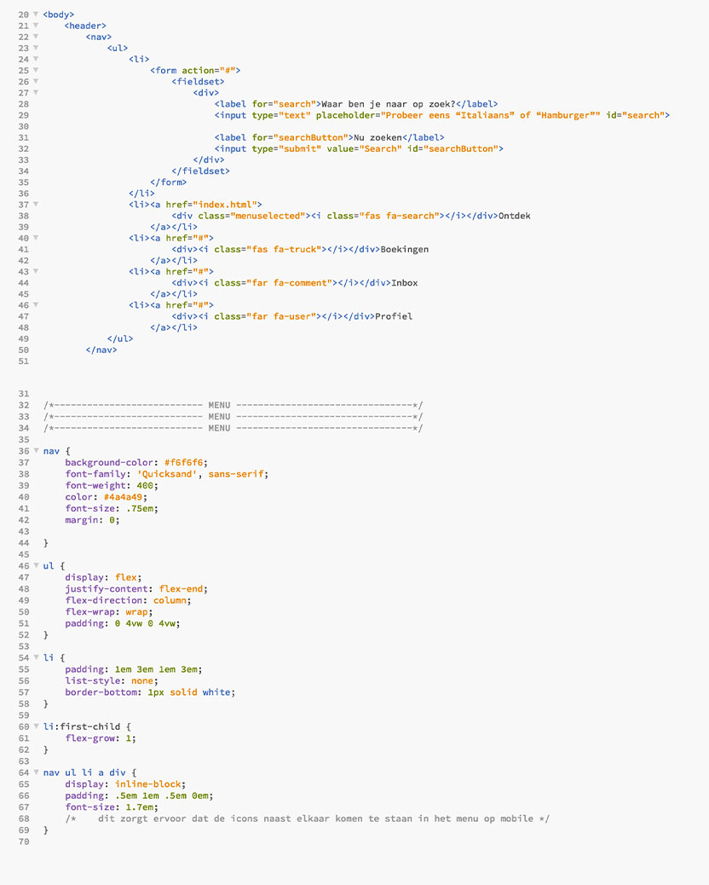
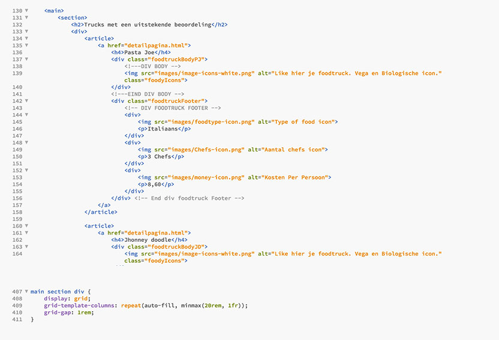
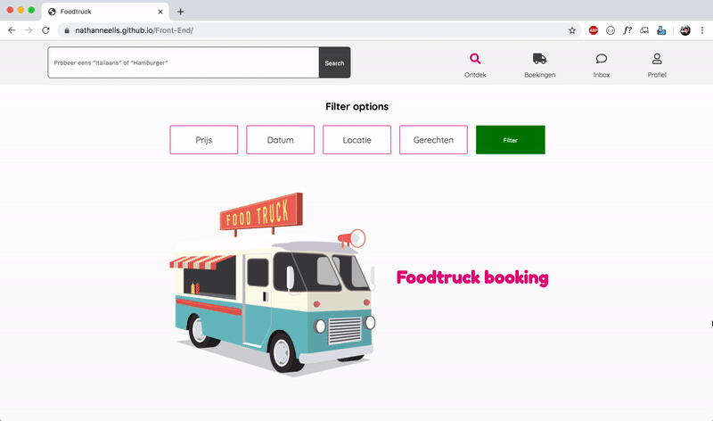
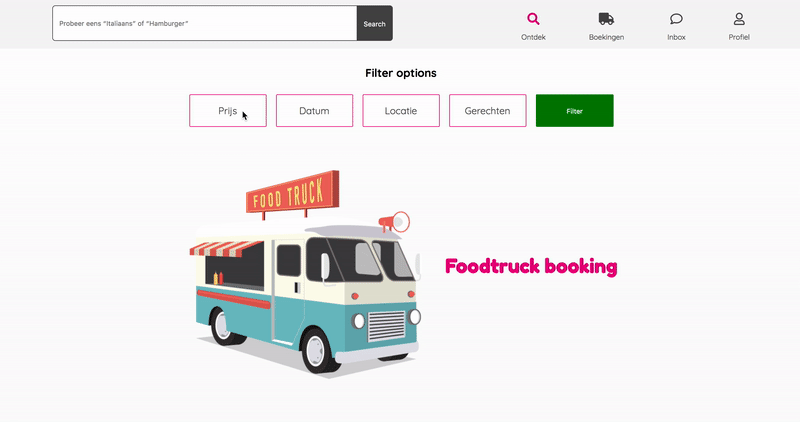
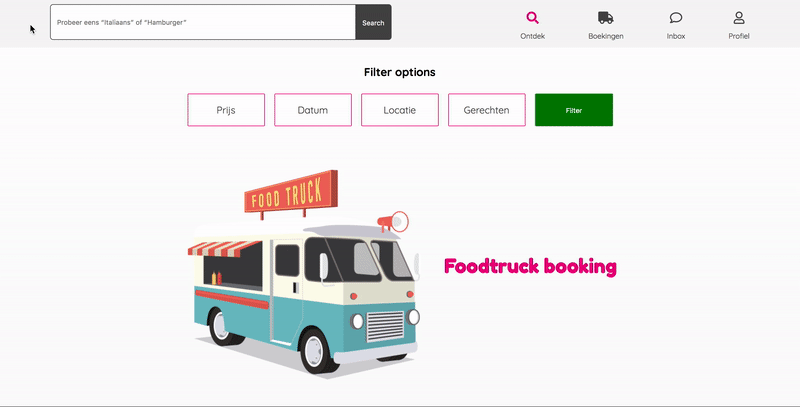

In een vorig project heb ik een platform ontwikkeld waar gebruikers een foodtruck kunnen inhuren en de eigenaar van een foodtruck deze kon verhuren. In dit project ga ik deze website ook coderen. Hierin gaat het niet meer om wat de inhoud van de website is, maar om meer technieken binnen html en css te leren.
Flexbox
Tijdens de lessen kreeg ik meer informatie over flexbox en de werkign ervan. Nu heb ik flexbox al in eerdere websites gebruikt, maar dit was klassikaal de eerste keer dat we er echt les in kregen. Nu ik het nog een keer heb toegepast begin ik flexbox steeds beter te begrijpen en toe te passen. Hieronder een afbeelding hoe ik het in deze website heb toegepast.

Grid
Naast flexbox zijn we ook grid gaan leren. Hier was ik nog niet bekend mee, maar na een aantal keer oefenen kon ik deze techniek mooi toepassen in mijn website.

Responsive
Door het toepassen van flexbox en grid en het gebruik van EM, REM en VW, VH is mijn website mooi responsive geworden. Door deze technieken was het aantal code wat ik nog in een media query moest gebruiken minimaal.

Javascript
In de website heb ik ook wat javascript toegevoegd. De javascript is een toggle voor een css class waardoor als je de filter option gebruikt er vervolg invoervelden tevoorschijn komen. In de range slider waar je jouw maximum bedrag kan aangeven is ook een stukje javascript gebruikt om de feedback van het bedrag te geven.

Toegankelijkheid
Door mijn HTML zo semantisch mogelijk te schrijven probeer ik mijn website zo toegankelijk mogelijk te maken. Ook heb ik in mijn CSS focus states gemaakt waardoor je goed door de website heen kan gaan met de tab toets.

Foodtrucks
Benieuwd hoe de website uiteindelijk geworden is? Bekijk dan de website zelf!